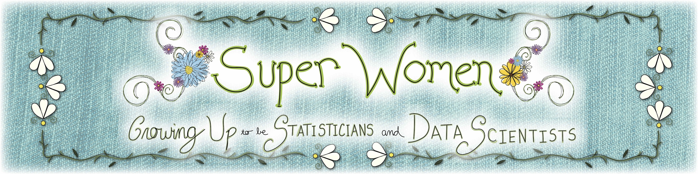
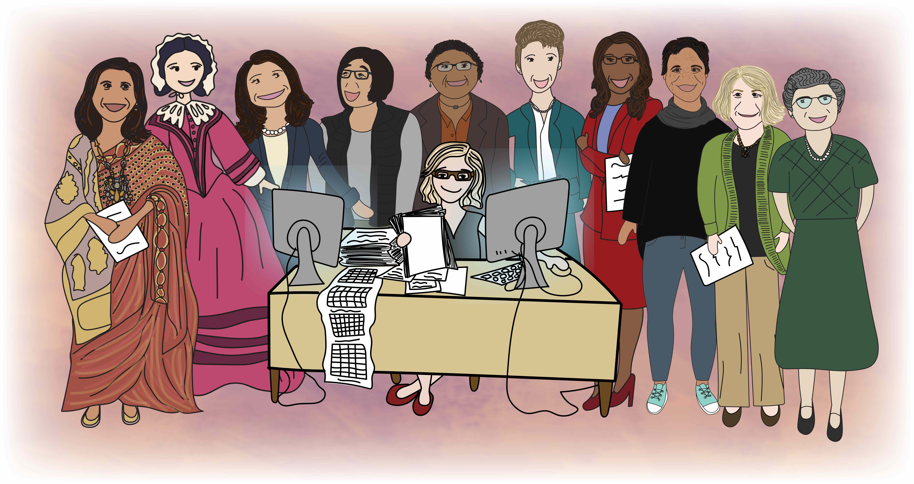
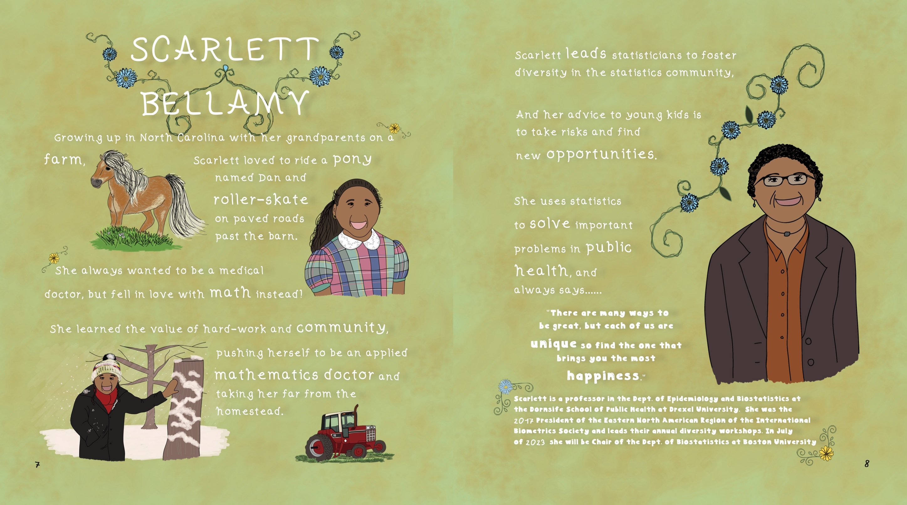

Picture it. It was 2018 and I had just started my tenure-track faculty job at Hopkins and I was coming off maternity leave where I welcomed my beautiful 2nd baby into the world. Sleepless nights, crazy juggling, also wanting to soak up every moment I could with our baby boy. At the time, I was constantly looking up baby books and science/math themed children’s books to read to our kids. Now to be clear, there are so many great books out there, but somehow I felt they were not quite what I was looking for. What is I was looking for?
- What if it focused in statistics?
- What if it focused in data science?
- What if featured women in these fields?
Fast forward to today: International Women’s Day 2023.
It is with the greatest honor and privilege to share with you a new book called Super Women: Growing Up to be Statisticians and Data Scientists!
You can find out about the project and book here: https://www.stephaniehicks.com/superwomen
It is a children’s book that features eleven amazing women statisticians and data scientists.
On each page of the book, one woman is featured with the left side of the page describing the individual when she was young and the right side of the page describing the individual today.

I just want to say thank you so much to Jessica Crowell who poured an enormous amount of creativity, energy, and design expertise into this book. Without you, this book would not be here today.
I also want to deeply and sincerely say thank you to the women who shared a part of themselves and allowed us to try and capture it in this book!
To the world – I hope it brings you as much joy, happiness, and inspiration as it does for me each time I read it.
FAQs for Educators and Caregivers
Editors and illustrators of the book
The book was edited by Stephanie Hicks and Jessica Crowell and illustrated by Jessica Crowell with an incredible amount of support from the Super Women Team.
Jessica Crowell is a videographer and editor, trained at the Maryland Institute College of Art (MICA), and now in the Department of Biostatistics at Johns Hopkins, where she works with faculty and staff on multimedia projects as part of work in the Johns Hopkins Data Science Lab.
Stephanie Hicks is a problem-forward scientist who uses statistics and data science tools to solve real-world problems in the biomedical data sciences. She is passionate about contributing to and supporting initiatives that promote justice, equity, diversity, and inclusion.
Why this book?
With this book, we aim to provide a playground of imagination for children to learn about statistics and data science by highlighting the stories of several individuals in these fields. We hope this inspires the next generation to learn more about these fields and how they can be used to help make the world brighter.
How do I access the book?
The children’s book is freely available now to download as a PDF on the Get the book page.
Also, we are in the process of working with the American Statistical Association to make the book available on Amazon, in case someone would like a physical copy. Proceeds from this will go towards supporting the Gertrude M. Cox Scholarship.